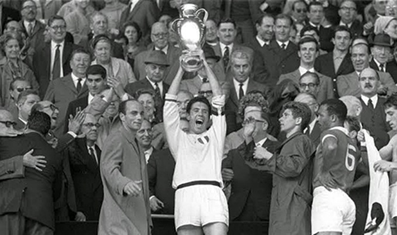
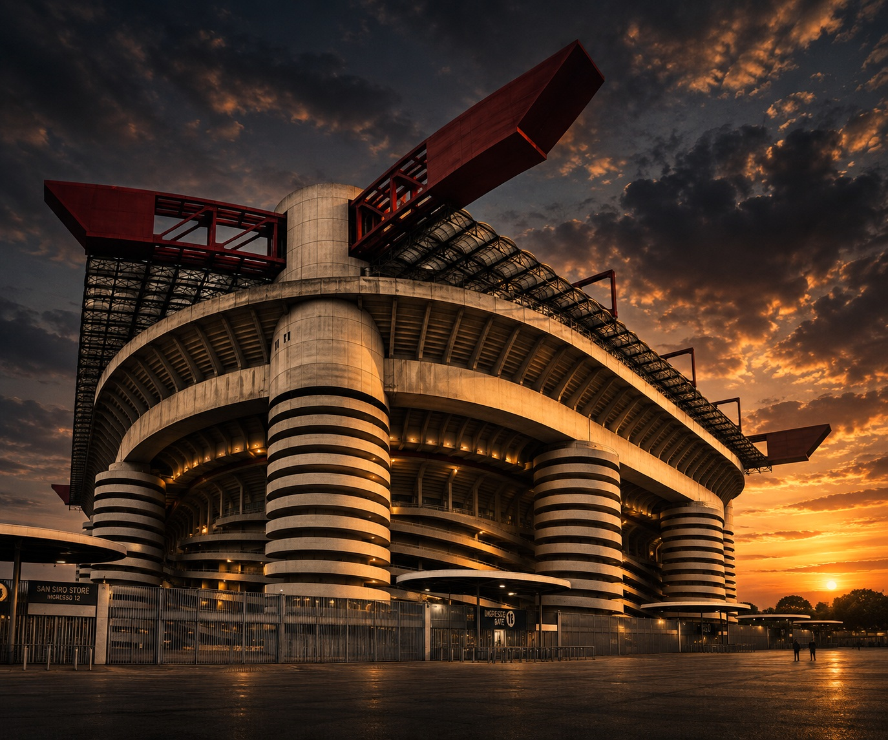
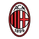
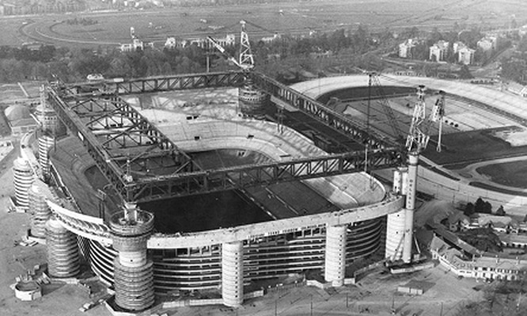
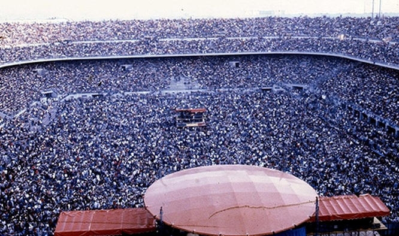
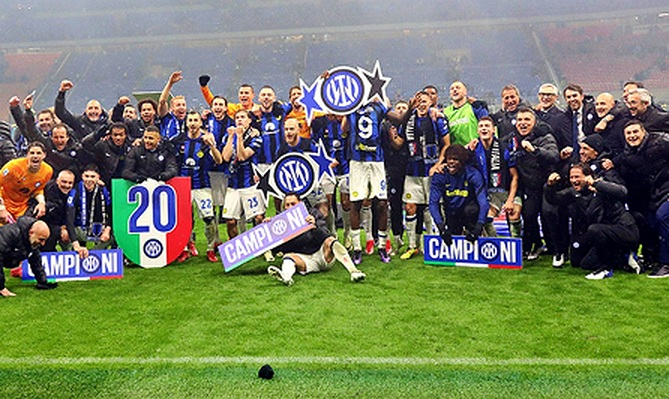

1963
LA PRIMA COPPA CAMPIONI
Il 22 maggio 1963 sotto la guida di Nereo Rocco il Milan conquista la sua prima Coppa dei Campioni, aprendo la gloriosa stagione del calcio milanese in Europa.


↗
MILANO, ITALIA
Più di uno stadio, una storia condivisa.

Inaugurato nel 1926, San Siro è il simbolo di Milano e del calcio italiano. Un luogo dove due anime, Inter e Milan, hanno scritto oltre un secolo di passione e rivalità sportiva ai massimi livelli mondiali.

APRI IMMAGINE ↗Il 22 maggio 1963 sotto la guida di Nereo Rocco il Milan conquista la sua prima Coppa dei Campioni, aprendo la gloriosa stagione del calcio milanese in Europa.

↗Bob Marley accende per la prima volta San Siro per un memorabile raduno musicale, inaugurando la storica vocazione dell'impianto come tempio del rock mondiale.

↗Nel derby terminato 1-2 per l'Inter, per la prima volta nella storia della Serie A viene aritmeticamente assegnato lo scudetto durante la stracittadina milanese.

↗